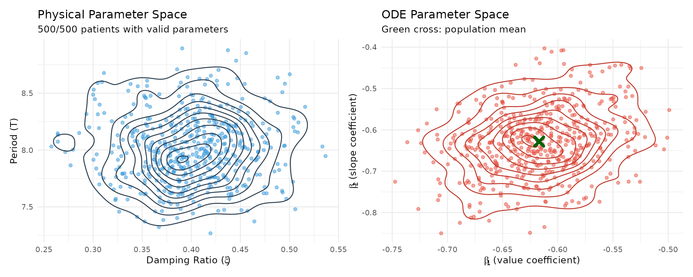
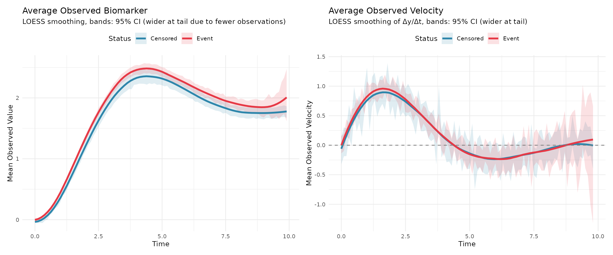
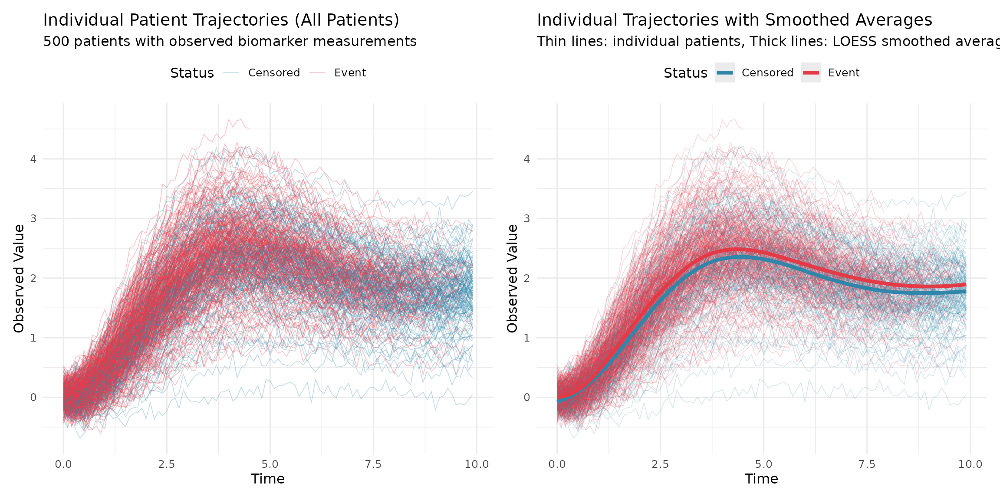
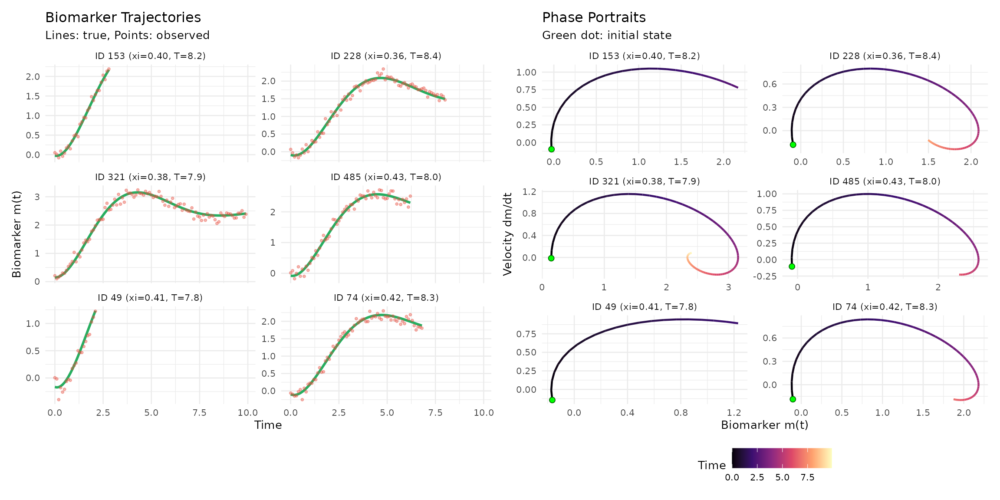

Simulation Setup
The sim dataset was generated using a joint ODE
framework with patient-specific dynamics parameters. The model comprises
longitudinal and survival sub-models linked through the biomarker
trajectory dynamics.
Longitudinal Sub-model
The observed biomarker measurements incorporate measurement error: V_{ij} = m_i(t_{ij}) + \varepsilon_{ij}, \quad \varepsilon_{ij} \sim \mathcal{N}(0, \sigma_e^2)
The true biomarker trajectory m_i(t) evolves according to a second-order ODE with patient-specific parameters:
\ddot{m}_i(t) = \mathbf{Z}_i(t)^{\top}(\boldsymbol{\beta} + \mathbf{b}_i)
where:
- \mathbf{Z}_i(t) = [m_i(t), \dot{m}_i(t), 1, x_{i1}, x_{i2}]^{\top} is the feature vector
- \boldsymbol{\beta} = [\beta_1, \beta_2, \beta_3, \beta_4, \beta_5]^{\top} represents population-level ODE parameters
- \mathbf{b}_i \sim \mathcal{N}(\mathbf{0}, \boldsymbol{\Sigma}_b) are patient-specific random effects
Survival Sub-model
The hazard function incorporates both biomarker value and velocity: \lambda_i(t) = \lambda_0(t)\exp\{\alpha_1 m_i(t) + \alpha_2[\dot{m}_i(t)]^\gamma + \phi_1 w_{i1} + \phi_2 w_{i2}\}
where:
- \lambda_0(t) is the Weibull baseline hazard
- \gamma = 1 determines the power of velocity contribution (linear in this simulation)
- w_{i1}, w_{i2} are baseline survival covariates
- \boldsymbol{\alpha} = (\alpha_1, \alpha_2)^{\top} captures the association with biomarker dynamics
#> Population-Level Parameters:
#> Association: α = [0.40, 1.50]
#> Survival covariates: φ = [0.40, -0.80]
#> ODE dynamics (population mean): β = [-0.62, -0.63, 1.23, 0.25, -0.12]
#> Measurement error: σ_e = 0.10
#>
#> Random Effects Covariance (Σ_b):
#> [,1] [,2] [,3] [,4] [,5]
#> [1,] 0.0021 0.0011 -0.0043 -0.0009 0.0004
#> [2,] 0.0011 0.0067 -0.0022 -0.0004 0.0002
#> [3,] -0.0043 -0.0022 0.0186 0.0017 -0.0009
#> [4,] -0.0009 -0.0004 0.0017 0.0103 -0.0002
#> [5,] 0.0004 0.0002 -0.0009 -0.0002 0.0101
#>
#> Dataset: 500 subjects, 34087 observations, 74% events
#>
#> Model Configuration:
#> Velocity power parameter: γ = 1Patient-Specific Dynamics
The simulation incorporates patient heterogeneity through continuous distributions of dynamics parameters. Each patient has unique oscillatory behavior determined by their damping ratio \xi_i and period T_i.

The left panel shows the distribution of patient-specific dynamics in the physical parameter space (\xi, T), while the right panel displays the distribution in the ODE parameter space (\beta_1, \beta_2). The green cross marks the population mean in the ODE parameter space. Note that a small fraction of patients may have invalid dynamics parameters due to the tail behavior of the Delta method approximation.
Average Trajectories by Survival Status

The left panel shows the average observed biomarker trajectories, while the right panel shows the average observed velocity estimated using finite differences. Both panels use LOESS smoothing with 95% confidence intervals.
Individual Patient Trajectories (Spaghetti Plot)

The spaghetti plots show all individual patient trajectories colored by event status. The left panel displays raw individual trajectories, while the right panel overlays LOESS-smoothed average trajectories to highlight the overall patterns. This visualization reveals the heterogeneity in patient trajectories and the separation between patients who experienced events versus those who were censored.

The example trajectories show diverse oscillatory behaviors across patients with different dynamics parameters. The damping ratio \xi controls oscillation decay (lower values produce more persistent oscillations), while the period T determines the oscillation frequency. The left panel shows biomarker trajectories over time (green lines: true values, red points: observed with noise). The right panel displays phase portraits showing the relationship between biomarker value and velocity, with color indicating time progression and green dots marking initial states.
#> Variance Components:
#> Biomarker: 0.374
#> Velocity: 0.139
#> Acceleration: 0.045
#>
#> Pairwise Correlations:
#> ρ(Biomarker, Velocity): -0.348
#> ρ(Biomarker, Acceleration): -0.748
#> ρ(Velocity, Acceleration): -0.022The variance hierarchy and correlation structure reflect the fundamental properties of the ODE system. Unlike independent variables in traditional models, these components are mechanistically linked through differential equations, creating intrinsic dependencies that capture the true dynamics of biomarker evolution. The patient-specific random effects \mathbf{b}_i introduce additional heterogeneity in the dynamics, allowing each patient to have unique oscillatory patterns while maintaining the overall population structure.
Model Comparison
We compare our proposed method against existing approaches:
| Model | Method Type | Data Source | Key Features |
|---|---|---|---|
| JointODE | Proposed | Noisy observations | ODE-based with patient-specific dynamics; estimates m(t), ṁ(t), m̈(t) |
| JSM | Baseline | Noisy observations | Linear mixed effects; only models m(t) |
| Time-varying Cox (Oracle) | Upper bound | True ODE values | MPLE benchmark with true values |
The Oracle model uses the true biomarker trajectory and derivatives at observed time points. While it has perfect information, it approximates the time-varying covariates using piecewise linear interpolation rather than modeling the continuous ODE dynamics. The JointODE model, in contrast, explicitly models patient heterogeneity through random effects on the ODE parameters, allowing for individualized dynamics estimation.
Based on 200 simulation replicates, we evaluate the estimation accuracy of the association parameters (\alpha_1, \alpha_2) and baseline covariate effects (\phi_1, \phi_2) using Bias, Empirical Standard Error (ESE), Average Standard Error (ASE), and Coverage Probability (CP) of 95% confidence intervals.

Simulation Results
The simulation results demonstrate good estimation accuracy for the joint ODE-Cox model across different sample sizes. For n=400, the JointODE method yields minimal biases for both association parameters \alpha_1 and \alpha_2, as well as the baseline covariate effects \phi_1 and \phi_2. The coverage probabilities remain close to the nominal 95% level, indicating proper uncertainty quantification.
Appendix
# Data preparation for comparison models
jsm_data <- dataPreprocess(
long = sim$data$longitudinal_data %>% rename(ID = id),
surv = sim$data$survival_data %>% rename(ID = id, survtime = time),
id.col = "ID",
long.time.col = "time",
surv.time.col = "survtime",
surv.event.col = "status"
) %>%
rename(
obstime = time,
start = start.join,
stop = stop.join,
event = event.join
) %>%
select(
ID, obstime, observed, biomarker, velocity, acceleration,
x1, x2, w1, w2, start, stop, event
)
#--------------------------------------------
# Model 1: JointODE (Proposed Method)
#--------------------------------------------
# fit_jointode <- JointODE(
# longitudinal_formula = observed ~ x1 + x2,
# survival_formula = Surv(time, status) ~ w1 + w2,
# longitudinal_data = sim$data$longitudinal_data,
# survival_data = sim$data$survival_data,
# state = as.matrix(sim$data$state)
# )
#--------------------------------------------
# Model 2: Traditional Joint Model (JSM)
#--------------------------------------------
# Step 1: Longitudinal sub-model with natural splines
fit_lme <- lme(
observed ~ x1 * bs(obstime, df = 5, Boundary.knots = c(0, 10)) +
x2 * bs(obstime, df = 5, Boundary.knots = c(0, 10)),
random = ~ 1 | ID,
data = jsm_data
)
# Step 2: Survival sub-model
fit_cox <- coxph(
Surv(start, stop, event) ~ w1 + w2 + cluster(ID),
data = jsm_data, x = TRUE
)
# Step 3: Joint model
fit_jsm <- jmodelTM(
fit_lme, fit_cox,
data = jsm_data,
timeVarY = "obstime"
)
#> Running jmodelTM(), may take some time to finish.
summary(fit_jsm)
#>
#> Call:
#> jmodelTM(fitLME = fit_lme, fitCOX = fit_cox, data = jsm_data,
#> timeVarY = "obstime")
#>
#> Data Descriptives:
#> Longitudinal Process Survival Process
#> Number of Observations: 34087 Number of Events: 372 (74.4%)
#> Number of Groups: 500
#> AIC BIC logLik
#> -19331.39 -19234.45 9688.694
#>
#> Coefficients:
#> Longitudinal Process: Linear mixed-effects model
#> Estimate StdErr
#> (Intercept) 0.0246765 0.0109456
#> x1 0.1000730 0.0112716
#> bs(obstime, df = 5, Boundary.knots = c(0, 10))1 -0.1572809 0.0079981
#> bs(obstime, df = 5, Boundary.knots = c(0, 10))2 2.2911966 0.0055779
#> bs(obstime, df = 5, Boundary.knots = c(0, 10))3 2.6734510 0.0087675
#> bs(obstime, df = 5, Boundary.knots = c(0, 10))4 1.3796473 0.0082903
#> bs(obstime, df = 5, Boundary.knots = c(0, 10))5 2.0009117 0.0085347
#> x2 -0.0998473 0.0108448
#> x1:bs(obstime, df = 5, Boundary.knots = c(0, 10))1 0.0816837 0.0082399
#> x1:bs(obstime, df = 5, Boundary.knots = c(0, 10))2 0.4364028 0.0057760
#> x1:bs(obstime, df = 5, Boundary.knots = c(0, 10))3 0.3202963 0.0090531
#> x1:bs(obstime, df = 5, Boundary.knots = c(0, 10))4 0.2156728 0.0086411
#> x1:bs(obstime, df = 5, Boundary.knots = c(0, 10))5 0.3019095 0.0090560
#> bs(obstime, df = 5, Boundary.knots = c(0, 10))1:x2 -0.0463551 0.0079017
#> bs(obstime, df = 5, Boundary.knots = c(0, 10))2:x2 -0.1560890 0.0054908
#> bs(obstime, df = 5, Boundary.knots = c(0, 10))3:x2 -0.1090950 0.0086239
#> bs(obstime, df = 5, Boundary.knots = c(0, 10))4:x2 -0.0561396 0.0080527
#> bs(obstime, df = 5, Boundary.knots = c(0, 10))5:x2 -0.1164112 0.0080976
#> z.value p.value
#> (Intercept) 2.2545 0.02417 *
#> x1 8.8784 < 2.2e-16 ***
#> bs(obstime, df = 5, Boundary.knots = c(0, 10))1 -19.6648 < 2.2e-16 ***
#> bs(obstime, df = 5, Boundary.knots = c(0, 10))2 410.7618 < 2.2e-16 ***
#> bs(obstime, df = 5, Boundary.knots = c(0, 10))3 304.9259 < 2.2e-16 ***
#> bs(obstime, df = 5, Boundary.knots = c(0, 10))4 166.4161 < 2.2e-16 ***
#> bs(obstime, df = 5, Boundary.knots = c(0, 10))5 234.4442 < 2.2e-16 ***
#> x2 -9.2070 < 2.2e-16 ***
#> x1:bs(obstime, df = 5, Boundary.knots = c(0, 10))1 9.9132 < 2.2e-16 ***
#> x1:bs(obstime, df = 5, Boundary.knots = c(0, 10))2 75.5551 < 2.2e-16 ***
#> x1:bs(obstime, df = 5, Boundary.knots = c(0, 10))3 35.3799 < 2.2e-16 ***
#> x1:bs(obstime, df = 5, Boundary.knots = c(0, 10))4 24.9588 < 2.2e-16 ***
#> x1:bs(obstime, df = 5, Boundary.knots = c(0, 10))5 33.3382 < 2.2e-16 ***
#> bs(obstime, df = 5, Boundary.knots = c(0, 10))1:x2 -5.8665 4.451e-09 ***
#> bs(obstime, df = 5, Boundary.knots = c(0, 10))2:x2 -28.4276 < 2.2e-16 ***
#> bs(obstime, df = 5, Boundary.knots = c(0, 10))3:x2 -12.6503 < 2.2e-16 ***
#> bs(obstime, df = 5, Boundary.knots = c(0, 10))4:x2 -6.9715 3.136e-12 ***
#> bs(obstime, df = 5, Boundary.knots = c(0, 10))5:x2 -14.3760 < 2.2e-16 ***
#> ---
#> Signif. codes: 0 '***' 0.001 '**' 0.01 '*' 0.05 '.' 0.1 ' ' 1
#>
#> Survival Process: Proportional hazards model with unspecified baseline hazard function
#> Estimate StdErr z.value p.value
#> w1 0.413571 0.052843 7.8263 5.022e-15 ***
#> w2 -0.777274 0.107737 -7.2146 5.411e-13 ***
#> observed 0.416949 0.099008 4.2113 2.539e-05 ***
#> ---
#> Signif. codes: 0 '***' 0.001 '**' 0.01 '*' 0.05 '.' 0.1 ' ' 1
#>
#> Variance Components:
#> StdDev
#> Random 0.2240952
#> Residual 0.1637861
#>
#> Integration: (Adaptive Gauss-Hermite Quadrature)
#> quadrature points: 9
#>
#> StdErr Estimation:
#> method: profile Fisher score with Richardson extrapolation
#>
#> Optimization:
#> convergence: success
#> iterations: 3
#--------------------------------------------
# Model 3: Time-varying Cox (Oracle - Theoretical Benchmark)
#--------------------------------------------
fit_oracle <- coxph(
Surv(start, stop, event) ~ biomarker + velocity + w1 + w2 +
cluster(ID),
data = jsm_data
)
summary(fit_oracle)
#> Call:
#> coxph(formula = Surv(start, stop, event) ~ biomarker + velocity +
#> w1 + w2, data = jsm_data, cluster = ID)
#>
#> n= 34087, number of events= 372
#>
#> coef exp(coef) se(coef) robust se z Pr(>|z|)
#> biomarker 0.36373 1.43868 0.09566 0.09577 3.798 0.000146 ***
#> velocity 2.03974 7.68858 0.53778 0.52082 3.916 8.99e-05 ***
#> w1 0.40876 1.50495 0.05283 0.05586 7.318 2.51e-13 ***
#> w2 -0.78014 0.45834 0.10769 0.10838 -7.198 6.09e-13 ***
#> ---
#> Signif. codes: 0 '***' 0.001 '**' 0.01 '*' 0.05 '.' 0.1 ' ' 1
#>
#> exp(coef) exp(-coef) lower .95 upper .95
#> biomarker 1.4387 0.6951 1.1925 1.7357
#> velocity 7.6886 0.1301 2.7703 21.3386
#> w1 1.5050 0.6645 1.3489 1.6791
#> w2 0.4583 2.1818 0.3706 0.5668
#>
#> Concordance= 0.67 (se = 0.014 )
#> Likelihood ratio test= 133.4 on 4 df, p=<2e-16
#> Wald test = 124.5 on 4 df, p=<2e-16
#> Score (logrank) test = 133.5 on 4 df, p=<2e-16, Robust = 111 p=<2e-16
#>
#> (Note: the likelihood ratio and score tests assume independence of
#> observations within a cluster, the Wald and robust score tests do not).Real Data Example
data(pbc)
#--------------------------------------------
# Model 1: Traditional JSM (使用原始pbc数据)
#--------------------------------------------
fit_lme_pbc <- lme(
log(serBilir) ~ drug *
bs(obstime, df = 4, degree = 2, Boundary.knots = c(0, 15)),
random = ~ 1 | ID,
data = pbc
)
fit_cox_pbc <- coxph(
Surv(start, stop, event) ~ drug,
data = pbc,
x = TRUE
)
fit_jt_pbc <- jmodelTM(
fit_lme_pbc, fit_cox_pbc, pbc,
timeVarY = "obstime"
)
summary(fit_jt_pbc)
#--------------------------------------------
# Model 2: JointODE (使用分离的数据)
#--------------------------------------------
longitudinal_pbc <- pbc %>%
select(ID, obstime, serBilir, drug) %>%
filter(!is.na(serBilir)) %>%
mutate(observed = log(serBilir)) %>% # 取对数转换
rename(id = ID, time = obstime) %>%
select(id, time, observed, drug) %>%
arrange(id, time)
survival_pbc <- pbc %>%
group_by(ID) %>%
slice_tail(n = 1) %>% # 取每个患者的最后一条记录
ungroup() %>%
select(ID, Time, death, drug) %>%
rename(
id = ID,
time = Time, # 真实生存时间
status = death # 事件状态
)
# 创建初始状态矩阵（使用第一次观测）
initial_states <- longitudinal_pbc %>%
group_by(id) %>%
slice(1) %>%
ungroup() %>%
select(id, observed) %>%
mutate(
velocity = 0 # 初始速度假设为0
) %>%
arrange(id)
state_matrix <- as.matrix(initial_states[, c("observed", "velocity")])
fit_jointode_pbc <- JointODE(
longitudinal_formula = observed ~ drug,
survival_formula = Surv(time, status) ~ drug,
longitudinal_data = longitudinal_pbc,
survival_data = survival_pbc,
state = state_matrix,
parallel = TRUE,
control = list(verbose = 3)
)